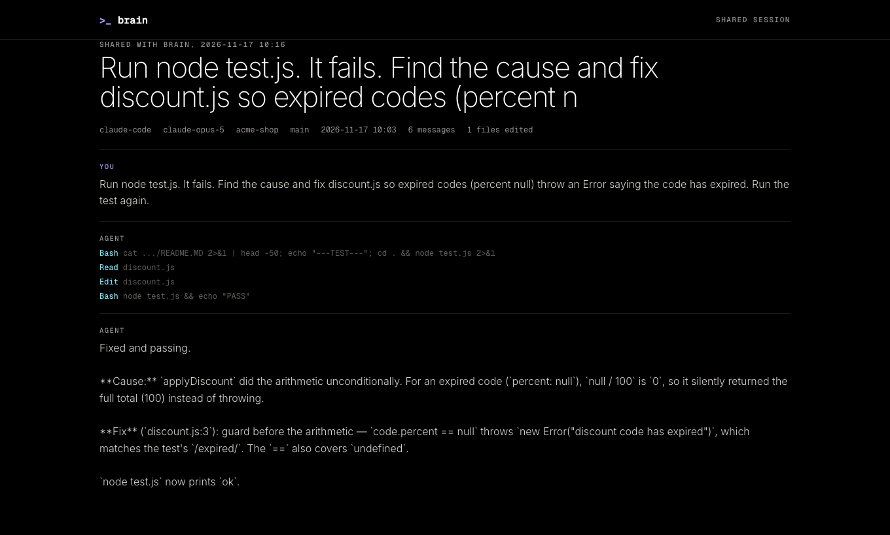

Find how you fixed itlast time.
Brain saves every Claude Code session on your computer. Search them, read them, and share one as a link.
- Save every session, automatically
- Search by a word you remember
- Share one as a private link

Everything your agent did.Still there.
Claude Code already saves every conversation on your computer. Brain reads those files and turns them into a list you can browse and search.
- Lists every session with its project, branch and date
- Full conversation: your prompts, the answers, the tools used
- Shows which files were edited
- Reads your existing history, nothing to set up
- Fast: it keeps a small index so the list opens instantly
# see your latest sessions $ node bin/brain.mjs list 10 # find an old fix $ node bin/brain.mjs search token refresh # browse it all in the browser $ node bin/brain.mjs serve ✓ http://localhost:4711 (this computer only) # share one session as a link $ node bin/brain.mjs share latest --yes
Find it in seconds.Not in an hour.
Type a few words. Brain looks through every prompt and answer you have ever had and shows the session and the exact line.
Your agent can lookback too.
Brain ships a Claude Code skill. Ask “how did I fix this last time?” and Claude searches your history and answers with the session and date.
skill/brain/SKILL.md
Copy it into your Claude Code skills folder.
brain share
Send a link to the whole conversation instead of a summary. Keys are hidden, and you can delete the link any time.
Teams
One shared history for a team, with private by default. Not built yet.
Claude Code today.More next.
Each agent gets its own small reader that turns its history into one common format, so Brain never depends on a single tool.
Dashed means planned, not shipped.
Stays on your computer.Secrets stay hidden.
Nothing leaves unless you share
Brain reads files already on your machine. Only brain share --yes uploads, and only that one session.
Keys and tokens hidden
API keys, tokens and private keys are masked before anything is shown.
Your history is not changed
Brain never edits or deletes your Claude Code files.
Brain runs on your computer.Not on your phone.
Mac, Linux or Windows, with Node or Bun. Early access: install it from GitHub, then open it in your browser.
$ cd brain && node bin/brain.mjs serve